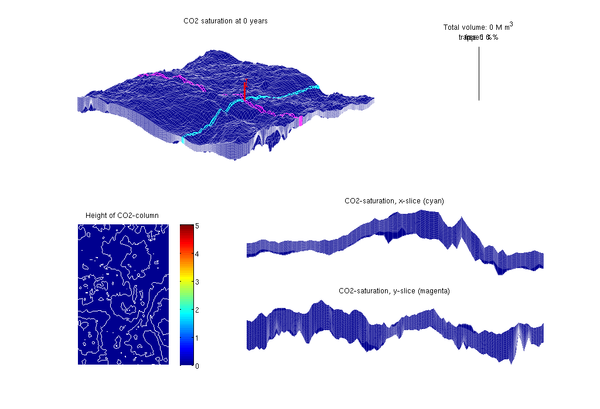
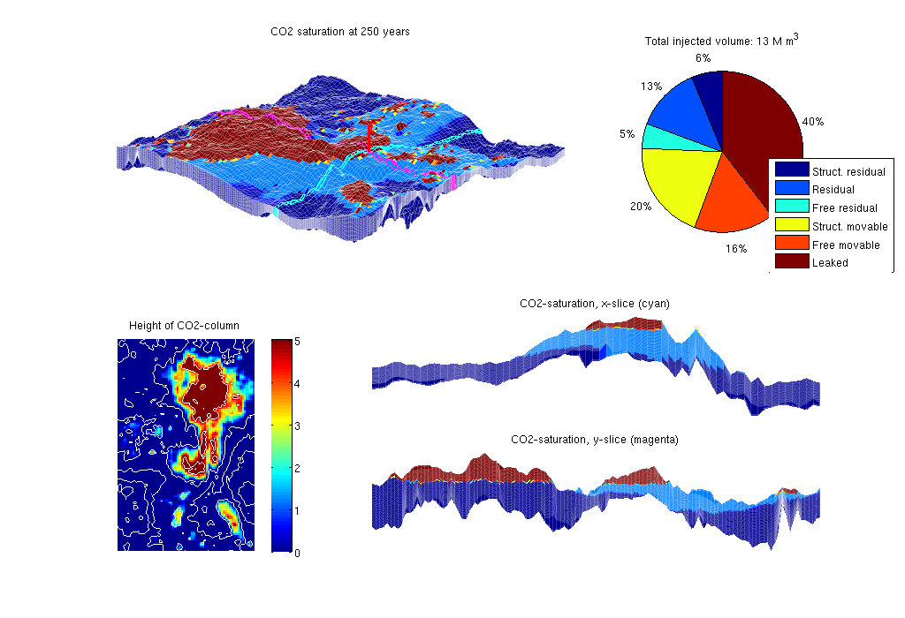
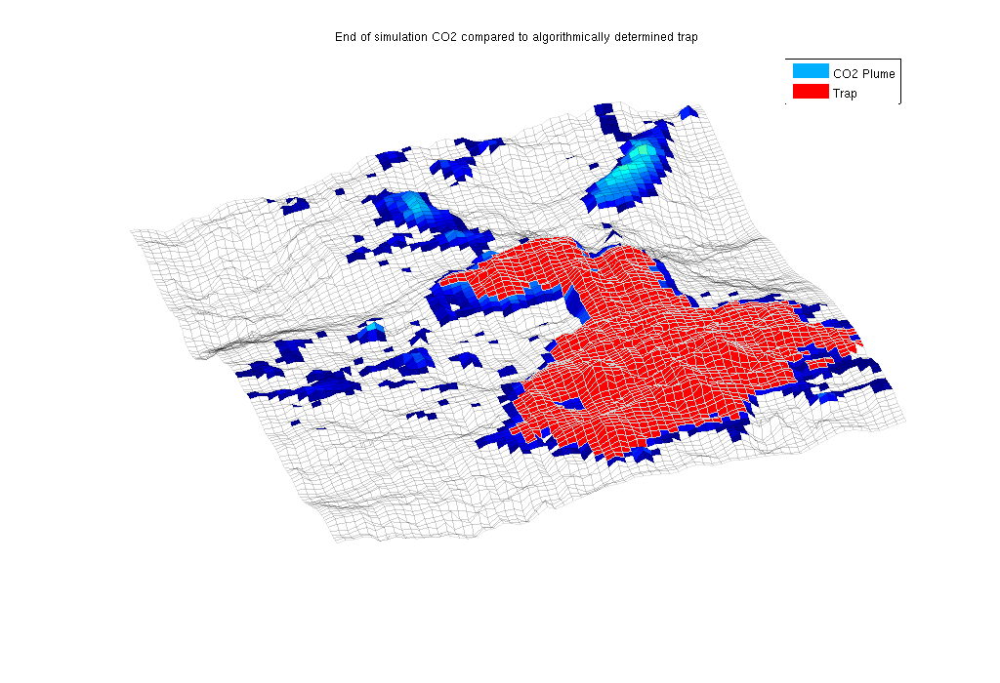

Vertical-Averaged Simulation: SLEIPNER
Sleipner is a comercial CO2 storage site in the North Sea, where CO2 has been injected since 1996.
In this example we simulate injection and migration of CO2 on sleipner using the data provided in the paper:
"Reservoir Modeling of CO2 Plume Behavior Calibrated Agains Monitoring Data From Sleipner, Norway", SPE 134891
The data set is avaliable online on: http://www.ieaghg.org/index.php?/2009112025/modelling-network.html
Provided with the paper is injection rates for 11 years. We inject 30 years using the last injection rate the last 19 years.
We demonstrate the use of C/C++-accelerated MATLAB, using the functions
- processgrid (replaces processGRDECL)
- mcomputegeometry (replaces computeGeometry)
- mtransportVE (replaces explicitTransportVE)
The last mentioned function requires that you have built the solver in the src/VEmex directory.
Contents
Display header
clc disp('================================================================'); disp(' Vertical averaging applied to the Sleipner model'); disp(' using C++ accelleration in the transport solver'); disp('================================================================'); disp(' ');
================================================================ Vertical averaging applied to the Sleipner model using C++ accelleration in the transport solver ================================================================
Construct stratigraphic, petrophysical, and VE models
The 3D model consists of a grid (G) and petrophysical parameters (rock). The VE model consists of a top-surface grid (Gt), petrophysical data (rock2D), and indices to the boundarcy cells where we will supply pressure boundary conditions. Called with a true flag, the routine will use C-accelerated MATLAB routines to process the data input and compute geometry. Once the models are created, they are stored in a data file for faster access at a later time.
[G, Gt, rock, rock2D, bcIxVE] = makeSleipnerVEmodel(true);
-> Reading Sleipner.mat
Set time and fluid parameters
Fluid data are taken from paper SPE 134891
gravity on T = 250*year(); stopInject = 30*year(); dT = 1*year(); dTplot = dT; fluidVE = initVEFluidHForm(Gt, 'mu' , [6e-2*milli 8e-4]*Pascal*second, ... 'rho', [760 1200] .* kilogram/meter^3, ... 'sr', 0.21, 'sw', 0.11, 'kwm', [0.75 0.54]);
Set well and boundary conditions
The well is placed near the actual injection site. The injection rates are taken from the beforementioned paper. Hydrostatic boundary conditions are specified on all outer boundaries.
disp(' -> Setting well and boundary conditions'); % Set well in 3D model wellIx = [36 78 7]; rates = [2.91e4; 5.92e4; 6.35e4; 8.0e4; 1.09e5; ... 1.5e5; 2.03e5; 2.69e5; 3.47e05; 4.37e5; 5.4e5]*meter^3/year; W = verticalWell([], G, rock, wellIx(1), wellIx(2), ... wellIx(3), 'Type', 'rate', 'Val', rates(1), ... 'Radius', 0.1, 'comp_i', [1,0], 'name', 'I'); % Well in 2D model WVE = convertwellsVE(W, G, Gt, rock2D); % BC in 2D model bcVE = addBC([], bcIxVE, 'pressure', ... Gt.faces.z(bcIxVE)*fluidVE.rho(2)*norm(gravity)); bcVE = rmfield(bcVE,'sat'); bcVE.h = zeros(size(bcVE.face));
-> Setting well and boundary conditions
Prepare simulations
Compute inner products and instantiate solution structure
disp(' -> Initialising solvers'); SVE = computeMimeticIPVE(Gt, rock2D, 'Innerproduct','ip_simple'); preComp = initTransportVE(Gt, rock2D); sol = initResSolVE(Gt, 0, 0); sol.wellSol = initWellSol(W, 300*barsa()); sol.s = height2Sat(sol, Gt, fluidVE); % Find trapping structure in grid. Used for calculation of trapped volumes ts=findTrappingStructure(Gt); % Select transport solver % Use C++ acceleration if it exists - NB: requires the VEmex module % Notice that the two solvers determine the time steps differently and % may therefore give slightly different answers. try mtransportVE; cpp_accel = true; catch me disp('mex-file for C++ acceleration not found'); disp(['See ', fullfile(VEROOTDIR,'VEmex','README'), ' for building instructions']); disp('Using matlab VE-transport'); cpp_accel = false; end
-> Initialising solvers Trap level 1: 197 traps identified Trap level 2: 34 traps identified Trap level 3: 2 traps identified Trap level 4: 1 traps identified
Prepare plotting
We will make a composite plot that consists of several parts: a 3D plot of the plume, a pie chart of trapped versus free volume, a plane view of the plume from above, and two cross-sections in the x/y directions through the well
opts = {'slice', wellIx, 'Saxis', [0 1-fluidVE.sw], ...
'maxH', 5, 'Wadd', 10, 'view', [130 50]};
plotPanelVE(G, Gt, W, sol, 0.0, [0 0 1], opts{:});
 Main loop
Run the simulation using a sequential splitting with pressure and transport computed in separate steps. The transport solver is formulated with the height of the CO2 plume as the primary unknown and the relative height (or saturation) must therefore be reconstructed.
t = 0; totVol = 0.0; fprintf(1,'\nSimulating %d years of injection', convertTo(stopInject,year)); fprintf(1,' and %d years of migration\n', convertTo(T-stopInject,year)); fprintf(1,'Time: %4d years', convertTo(t,year)); w = WVE; tic while t<T % Advance solution: compute pressure and then transport sol = solveIncompFlowVE(sol, Gt, SVE, rock, fluidVE, ... 'bc', bcVE, 'wells', w); if cpp_accel [sol.h, sol.h_max] = mtransportVE(sol, Gt, dT, rock, ... fluidVE, 'bc', bcVE, 'wells', w, ... 'gravity', norm(gravity)); else sol = explicitTransportVE(sol, Gt, dT, rock, fluidVE, ... 'bc', bcVE, 'wells', w, 'preComp', preComp, ... 'intVert', false); end % Reconstruct 'saturation' defined as s=h/H, where h is the height of % the CO2 plume and H is the total height of the formation sol.s = height2Sat(sol, Gt, fluidVE); assert( max(sol.s(:,1))<1+eps && min(sol.s(:,1))>-eps ); t = t + dT; % Add the volume injected during last time step to the total volume % and compute trapped and free volumes if ~isempty(w) totVol = totVol + w.val*dT; end vol = volumesVE(Gt, sol, rock2D, fluidVE, ts); % Check if we are to stop injecting or change injection rate if t>= stopInject w = []; dT = 5*year(); dTplot = dT; else ind = min(floor(t/year)+1, numel(rates)); rate = rates(ind); w.val = rate; end % Plotting fprintf(1,'\b\b\b\b\b\b\b\b\b\b%4d years', convertTo(t,year)); if mod(t,dTplot)~= 0 && t<T, continue else plotPanelVE(G, Gt, W, sol, t, [vol totVol], opts{:}); drawnow end end fprintf(1,'\n\n'); % delete C++ simulator if cpp_accel, mtransportVE; end etime = toc; disp(['Elapsed simulation time: ', num2str(etime), ' seconds.']);
Simulating 30 years of injection and 220 years of migration Time: 250 years Elapsed simulation time: 242.3689 seconds.
Show the structural trap
After the simulation has completed, we are interested in seeing how the location of the CO2 plume after a long migration time corresponds to the trapping estimates produced by trapAnalysis. This is done by finding the trap index of the well injection cell and then plotting the trap along with the final CO2 plume.
% Generate traps and find the trap corresponding to the well cells res = trapAnalysis(Gt, false); trap = res.trap_regions([WVE.cells]); % Plot the areas with any significant CO2 height along with the trap in red clf; plotCellData(Gt, sol.h, sol.h > 0.01) plotGrid(Gt, res.traps == trap, 'FaceColor', 'red', 'EdgeColor', 'w') plotGrid(Gt, 'FaceColor', 'None', 'EdgeAlpha', .1) legend({'CO2 Plume', 'Trap'}) axis tight off view(-20, 75) title('End of simulation CO2 compared to algorithmically determined trap')